전산응용토목제도기능사 (2013-01-27 기출문제)
1과목: 토목제도(CAD)
1. 한중 콘크리트에 관한 설명으로 옳지 않은 것은?
- 한중 콘크리트를 시공하여야 하는 기상조건의 기준은 하루의 평균기온 0°C 이하가 예상되는 조건이다.
- 타설할 때의 콘크리트는 5°C 이하가 예상되는 조건이다.
- 재료를 가열할 경우, 물 또는 골재를 가열하는 것으로 하며, 시멘트는 어떠한 경우라도 직접 가열할 수 없다.
- 시공 시 특히 응결경화 초기에 동결시키지 않도록 주의하여야 한다.
(정답률: 65%)

2. D22 이형철근으로 스터럽의 90° 표준갈고리를 제작할 때, 90° 구부린 끝에서 최소 얼마 이상 연장하여야 하는가? (단, db는 철근의 지름이다.)
- 6db
- 9db
- 12db
- 15db
(정답률: 75%)
3. 잔골재의 조립률이 시방배합의 기준표보다 0.1만큼 크다면 잔골재율(S/a)을 어떻게 보정하는가?
- 1% 작게 한다.
- 1% 크게 한다.
- 0.5% 작게 한다.
- 0.5% 크게 한다.
(정답률: 41%)
4. 직경 100mm의 원추형 공시체를 사용한 콘크리트의 압축강도 시험에서 압축하중이 200kN에서 파괴가 진행되었다면 압축강도는?
- 2.5MPa
- 10.2MPa
- 20.0MPa
- 25.5MPa
(정답률: 42%)
5. 그림과 같이 b=400mm, d=400mm, As=258mm2인 단철근직사각형 보의 중립축 위치 c는? (단, ƒ<>sub>ck=28MPa, ƒy=400MPa이다.)
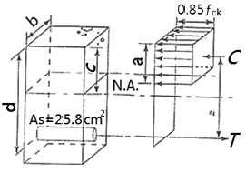
- 108mm
- 128mm
- 215mm
- 210mm
(정답률: 46%)
6. 그림과 같은 단철근 직사각형 보의 철근비가 0.025 일 때, 철근량 As 는?
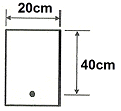
- 10cm2
- 15cm2
- 20cm2
- 25cm2
(정답률: 66%)
7. 표준갈고리를 갖는 인장 이형철근의 정착에서 D35 이하 180° 갈고리 철근에서 정착길이 구간을 3db 이하 간격으로 띠철근 또는 스터럽이 정착되는 철근을 수직으로 둘러싼 경우 기본정착길이 ɭhb에 대한 보정계수는?
- 0.70
- 0.75
- 0.80
- 0.85
(정답률: 25%)
8. 토목재료로서 콘크리트의 일반적인 특징으로 옳지 않은 것은?
- 콘크리트 자체가 무겁다.
- 건조수축에 의한 균열이 생기기 쉽다.
- 압축강도와 인장강도가 동일하다.
- 내구성과 내화성이 모두 크다.
(정답률: 87%)
9. 콘크리트 압축응력의 분포와 콘크리트변형률 사이의 관계에서 등가직사각형 응력블록에 대한 설명으로 옳지 않는 것은?
- 압축응력의 분포와 변형률 사이의 관계를 직사각형으로 가정한다.
- 콘크리트의 평균 응력으로 0.85ƒck를 사용한다.
- 응력은 너비 b와 깊이 a에 의해 만들지는 보의 단면에 작용하는 것으로 가정한다.
- 응력의 식 a=β1·C에서 C는 인장철근에서 부터 압축측 콘크리트 상단까지의 거리이다.
(정답률: 45%)
10. 주철근의 표준갈고리로 옳게 짝지어진 것은?
- 45° 표준갈고리와 90° 표준갈고리
- 60° 표준갈고리와 120° 표준갈고리
- 90° 표준갈고리와 180° 표준갈고리
- 90° 표준갈고리와 135° 표준갈고리
(정답률: 69%)
11. 콘크리트의 내구성에 영향을 끼치는 요인으로 가장 거리가 먼 것은?
- 동결과 융해
- 거푸집의 종류
- 물 흐름에 의한 침식
- 철근의 녹에 의한 균열
(정답률: 88%)
12. 철근 콘크리트 구조물에서 보가 극한 상태에 이르게 되면 구조물 자체는 파괴되거나 파괴에 가까운 상태가 된다. 실제의 구조물에서 이와 같은 파괴가 일어나지 않게 하기 위해 공칭강도에 무엇을 곱하여 사용하는가?
- 강도감수계수
- 응력
- 변형률
- 온도본정계수
(정답률: 65%)
13. 숏콘크리트 시공 및 그라우팅에 의한 지수공법에 주로 사용되는 혼화제는?
- 발포제
- 급결제
- 공기연행제
- 고성능 유동화제
(정답률: 60%)
14. 잔골재, 자갈 또는 부순 모래, 여러 가지 슬러그 골재 등을 사용하여 만든 단위질량이 2300Kg/m3 전후의 콘크리트를 무엇이라 하는가?
- 일반 콘크리트
- 수밀 콘크리트
- 경량골재 콘크리트
- 폴리머 시멘트 콘크리트
(정답률: 47%)
15. 두께 120㎜의 슬래브를 설계하고자 한다. 최대정모멘트가 발생하는 위험단면에서 주철근의 중심 간격은 얼마 이하이어야 하는가?
- 140㎜ 이하
- 240㎜ 이하
- 340㎜ 이하
- 440㎜ 이하
(정답률: 85%)
16. 압축부재에서 사각형 띠철근으로 둘러싸인 주철근의 최소 갯수는?
- 4개
- 9개
- 16개
- 25개
(정답률: 62%)
17. 용접이음은 철근의 설계기준항복강도 ƒy의 몇 % 이상을 발휘할 수 있는 완전용접이어야 하는가?
- 85%
- 100%
- 125%
- 150%
(정답률: 71%)
18. 지간 4m의 단순보가 고정하중 20kN/m과 활하중 30kN/m를 받고 있다. 이 보를 설계하는데 필요한 최대공칭모멘트는? (단, 고정하중과 활하중에 대한 하중계수는 각각 1.2와 1.6이며, 이 보는 인장지배 단면으로 본다.)(오류 신고가 접수된 문제입니다. 반드시 정답과 해설을 확인하시기 바랍니다.)
- 72kN·m
- 122kN·m
- 144kN·m
- 169kN·m
(정답률: 21%)
19. 프리스트레스를 하지 않은 부재의 현장치기 콘크리트에서 흙에 접하거나 외부의 공기에 노출되는 콘크리트로서 D29 이상의 철근인 경우 최소 피복 두께는?
- 40㎜
- 50㎜
- 60㎜
- 80㎜
(정답률: 38%)
20. 철근 콘크리트 구조물의 설계 방법이 아닌 것은?
- 강도 설계법
- 허용응력 설계법
- 한계상태 설계법
- 하중강도 설계법
(정답률: 36%)
2과목: 철근콘크리트
21. 기둥에 관한 설명으로 옳지 않은 것은?
- 지붕, 바닥 등의 상부 하중을 받아서 토대 및 기초에 전달하고 벽체의 골격을 이루는 수직 구조체이다.
- 단주인가 장주인가에 따라 동일한 단면이라도 그 강도가 달라진다.
- 순수한 축방향 압축력만을 받는 일은 거의 없다.
- 기둥의 강도는 단면의 모양과 밀접한 연관이 있고, 기둥 길이와는 무관하다.
(정답률: 59%)
22. 콘크리트를 주재료로 하고 철근을 보강 재료로 하여 만든 구조물 무엇이라 하는가?
- 합성 콘크리트 구조
- 무근 콘크리트 구조
- 철근 콘크리트 구조
- 프리스트레스 콘크리트 구조
(정답률: 78%)
23. 2방향 슬래브의 위험단면에서 철근 간격은 슬래브 두께의 2배 이하 또한 몇 ㎜ 이하이어야 하는가?
- 100㎜
- 200㎜
- 300㎜
- 400㎜
(정답률: 62%)
24. 철근 콘크리트가 성립하는 이유(조건)으로 옳지 않은 것은?
- 콘크리트 속에 묻힌 철근은 녹이 슬지 않는다.
- 철근과 콘크리트는 부착이 매우 잘 된다.
- 철근과 콘크리트는 온도에 대한 열팽창 계수가 거의 같다.
- 철근과 콘크리트는 인장 강도가 거의 같다.
(정답률: 73%)
25. 그림과 같은 옹벽에 수평력 20kN, 수직력 40kN이 작용하고 있다. 전도에 대한 안전율은? (단, 기초 좌측 하단 (‘0’ 점)을 기준으로 한다.)
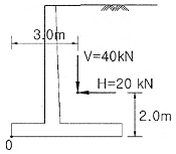
- 1.3
- 2.0
- 3.0
- 4.0
(정답률: 38%)
26. 프리스트레스트 콘크리트(PSC)의 특징이 아닌 것은? (단, 철근 콘크리트와 비교)
- 고강도의 콘크리트와 강재를 사용한다.
- 안전성이 낮고 강성이 커서 변형이 작다.
- 단면을 작게 할 수 있어 지간이 긴 구조물에 적당하다.
- 설계하중이 작용하더라도 인장측 콘크리트에 균열이 발생하지 않는다.
(정답률: 59%)
27. PS강재나 시스 등의 마찰을 줄이기 위해 사용되는 마찰 감소재가 아닌 것은?
- 왁스
- 모래
- 파라핀
- 그리스
(정답률: 61%)
28. 주탑과 경사로 배치되어 있는 인장 케이블 및 바닥판으로 구성되어 있으며, 바닥판은 주탑에 연결되어 있는 와이어 케이블로 지지되어 있는 형태의 교량은?
- 사장교
- 라멘교
- 아치교
- 현수교
(정답률: 77%)
29. 설계에 있어 고려하는 하중의 종류 중 변동하는 하중에 해당되는 것은?
- 고정하중
- 설하중
- 수평토압
- 수직토압
(정답률: 73%)
30. 외력에 대한 옹벽의 안정 조건이 아닌 것은?
- 활동에 대한 안정
- 침하에 대한 안정
- 전도에 대한 안정
- 전단력에 대한 안정
(정답률: 56%)
31. 강도 설계법에서 인장지배을 받는 부재의 강도 감소계수 값은?
- 0.65
- 0.75
- 0.85
- 0.95
(정답률: 61%)
32. 터널의 설계에 고려사항으로 옳지 않은 것은?
- 통풍이 양호한 곳
- 지반 조건이 양호한 곳
- 터널 내 곡선의 반지름이 짧을 것
- 시공할 때나 완성 후의 배수를 고려할 것
(정답률: 77%)
33. 용접 이음의 특징에 대한 설명으로 옳지 않은 것은?
- 접합부의 강성이 작다.
- 시공 중에 소음이 없다.
- 인장측의 리벳 구멍에 의한 단면 손실이 없다.
- 리벳 접합 방식에 비하여 강재를 절약할 수 있다.
(정답률: 39%)
34. 보통 무근 콘크리트로 만들어지며 자중에 의하여 안정을 유지하는 옹벽의 형태를 무엇이라 하는가?
- 중력식 옹벽
- L형 옹벽
- 캔틸레버 옹벽
- 뒷부벽식 옹벽
(정답률: 68%)
35. 구조 재료로서의 강재의 특징에 대한 설명으로 옳지 않은 것은?
- 균질성을 가지고 있다.
- 관리가 잘 된 강재는 내구성이 우수하다.
- 다양한 형상과 치수를 가진 구조로 만들 수 있다.
- 다른 재료에 비해 단위 면적에 대한 강도가 작다.
(정답률: 81%)
36. 한국 산업 표준 중에서 토건 기호는?
- KS A
- KS C
- KS F
- KS M
(정답률: 89%)
37. 재료의 단면 표시 중 벽돌을 나타내는 것은?
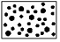
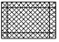
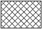
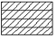
(정답률: 77%)
38. 구조용 재료의 단면표시 그림 중에서 인조석을 표시한 것은?
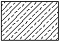
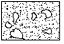
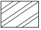
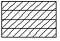
(정답률: 70%)
39. 그림과 같은 양면 접시머리 공장 리벳의 바른 표시는?
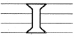
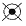
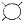
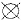
(정답률: 71%)
40. 주기억장치에 주로 사용되며 전원이 차단되면 기억된 내용이 모두 지워지는 기억장치는?
- ROM
- RAM
- USB
- CD-ROM
(정답률: 80%)
3과목: 토목일반구조
41. 용도에 따른 선의 명칭으로 옳은 것은?
- 가는 선
- 굵은선
- 중심선
- 아주 굵은 선
(정답률: 70%)
42. 토목제도에서 한글 서체는 수직 또는 오른쪽으로 어느 정도 경사지게 쓰는 것이 원칙인가?
- 10°
- 15°
- 20°
- 30°
(정답률: 79%)
43. 컴퓨터 입력 장치에서 문서, 그림, 사진 등을 이미지 형태로 입력하는 장치는?
- 광펜
- 스캐너
- 태블릿
- 조이스틱
(정답률: 72%)
44. 일반적인 제도 규격용지의 폭과 길이의 비로 옳은 것은?
- 1 : 1
- 1 : √2
- 1 : √3
- 1 : 4
(정답률: 87%)
45. 투상법에서 제3각법에 대한 설명으로 옳지 않은 것은?
- 정면도 아래에 배면도가 있다.
- 정면도 위에 평면도가 있다.
- 정면도 좌측에 좌측면도가 있다.
- 제3면각 안에 물체를 놓고 투상하는 방법이다.
(정답률: 60%)
46. 구조물 설계 제도에서 도면의 작도 순서로 가장 알맞은 것은?
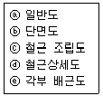
- ⓑ → ⓒ → ⓓ → ⓔ → ⓐ
- ⓑ → ⓔ → ⓐ → ⓒ → ⓓ
- ⓐ → ⓔ → ⓓ → ⓑ → ⓒ
- ⓐ → ⓒ → ⓑ → ⓔ → ⓓ
(정답률: 55%)
47. 제도에 일반적으로 사용되는 축척으로 가장 거리가 먼 것은?
- 1/2
- 1/3
- 1/5
- 1/10
(정답률: 55%)
48. 구조물 전체의 개략적인 모양을 표시하는 도면으로 구조물 주위의 지형지물을 표시하여 지형과 구조물과의 연관성을 명확하게 표현한 도면은?
- 일반도
- 구조도
- 측량도
- 설명도
(정답률: 51%)
49. 측량제도에서 종단면도 작성에 관한 설명으로 옳지 않은 것은?
- 지반고가 계획고보다 클 때에는 흙쌓기가 된다.
- 기준선은 지반고와 계획고 이하가 되도록 한다.
- NO.4에서 9.8m 지점의 ＋말뚝을 표시한 것이다.
- 지반고란에서는 야장에서 각 중심 말뚝의 표고를 기재한다.
(정답률: 43%)
50. 치수와 치수선에 대한 설명으로 옳지 않은 것은?
- 치수는 특별히 명시하지 않으면 마무리 치수(완성치수)로 표시한다.
- 치수선은 표시할 치수의 방향에 평행하게 긋는다.
- 치수는 계산하지 않고서도 알 수 있게 표시한다.
- 치수의 단위는 mm을 원칙으로 하고, 치수 뒤에 단위를 써서 표시한다.
(정답률: 63%)
51. 직육면체의 직각으로 만나는 3개의 모서리가 모두 120°를 이루는 투상도는?
- 정투상도
- 등각투상도
- 부등각투상도
- 사투상도
(정답률: 76%)
52. 표제란에 기입할 사항이 아닌 것은?
- 도면 번호
- 도면 명칭
- 도면치수
- 기업체명
(정답률: 43%)
53. 척도에 관한 설명으로 옳지 않은 것은?
- 현척은 실제 크기를 의미 한다.
- 배척은 실제보다 큰 크기를 의미한다.
- 축척은 실제보다 작은 크기를 의미한다.
- 그림의 크기가 치수와 비례하지 않으면 NP를 기입한다.
(정답률: 84%)
54. 판형재 중 각 강(鋼)의 치수 표시방법은?
- øA-L
- □A-L
- DA-L
- □A×B×t-L
(정답률: 42%)
55. 아래 그림은 어떠한 재료 단면의 경계를 나타낸 것인가?
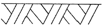
- 지반면
- 자갈면
- 암반면
- 모래면
(정답률: 90%)
56. 구조물 제도에서 물체의 절단면을 표시하는 것으로 중심선에 대하여 45° 경사지게 일정한 간격으로 긋는 것은?
- 파선
- 스머징
- 해칭
- 스프릿
(정답률: 76%)
57. CAD 작업의 특징으로 옳지 않은 것은?
- 설계 기간의 단축으로 생산성을 향상시킨다.
- 도면분석, 수정, 제작이 수작업에 비하여 더 정확하고 빠르다.
- 컴퓨터 화면을 통하여 대화방식으로 도면을 입·출력할 수 있다.
- 설계 도면을 여러 사람이 동시 작업이 불가능하여, 표준화 작업에 어려움이 있다.
(정답률: 83%)
58. 국가 규격 명칭과 규격 기호가 바르게 표시된 것은?
- 일본 규격 - JKS
- 미국 규격 - USTM
- 스위스 규격 - JIS
- 국제 표준화 기구 - ISO
(정답률: 82%)
59. 치수 기입에서 치수 보조 기호에 대한 설명으로 옳지 않은 것은?
- 정사각형의 변 : □
- 반지름 : R
- 지름 : D
- 판의 두께 : t
(정답률: 55%)
60. 도형의 표시방법에서 투상도에 대한 설명으로 옳지 않은 것은?
- 물체의 오른쪽과 왼쪽이 같을 때에는 우측면도만 그린다.
- 정면도와 평면도만 보아도 그 물체를 알 수 있을 때에는 측면도를 생략해도 된다.
- 물체의 길이가 길 때, 정면도와 평면도만으로 표시할 수 있을 경우에는 측면도를 생략한다.
- 물체에 따라 정면도 하나로 그 형태의 모든 것을 나타낼 수 있을 때에도 다른 투상도를 모두 그려야 한다.
(정답률: 52%)
설명: 한중 콘크리트를 시공하는 기상조건의 기준은 하루의 최저기온이 0°C 이하가 예상되는 조건이며, 평균기온과는 관련이 없습니다. 따라서 첫 번째 보기가 옳지 않습니다.